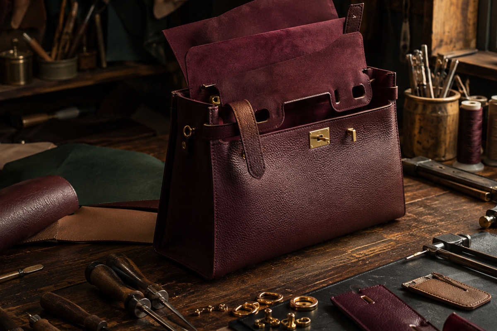

TRAVEL · VOLUME 01 / 05
Travel Bags: Capacity Without Compromise
A guide to structure, weight, access and lasting comfort in motion.

The most rewarding bag choices unite visual instinct with close observation. In this entry, we use travel bags: capacity without compromise as a lens for understanding proportion, craft, comfort and long-term usefulness. The aim is not to prescribe one perfect object, but to sharpen the questions that make personal judgment more confident.
01. Begin with the role, not the object
A considered bag begins with a clear role. Think about the places it will go, the hours it will be carried and the objects that genuinely belong inside. This small exercise changes the decision from attraction alone into a useful design brief. It also protects the character of a beautiful piece because the material and construction are matched to realistic use.
For this travel study, return to the central question: a guide to structure, weight, access and lasting comfort in motion. Consider the answer in daylight, with familiar clothing and with the contents you actually carry. Specific observation is more reliable than abstract rules, and repeated use is the clearest measure of successful design.
02. Study proportion from every angle
Scale is not simply a measurement. Width, depth, handle height and strap drop determine where the bag sits against the body and how it relates to a coat, dress or tailored jacket. Look at the profile as carefully as the front. A modest shift in depth can make an elegant silhouette feel cumbersome, while a well-positioned strap lets even a generous bag appear composed.
For this travel study, return to the central question: a guide to structure, weight, access and lasting comfort in motion. Consider the answer in daylight, with familiar clothing and with the contents you actually carry. Specific observation is more reliable than abstract rules, and repeated use is the clearest measure of successful design.
03. Let material communicate
Fine leather is not one uniform category. Smooth calfskin catches light and appears formal; pebbled grains disguise small marks; suede absorbs colour with exceptional richness but asks for greater care. Canvas, raffia and technical textiles introduce different weight and weather behaviour. The best choice is the one whose sensory character and practical demands both suit the intended role.
For this travel study, return to the central question: a guide to structure, weight, access and lasting comfort in motion. Consider the answer in daylight, with familiar clothing and with the contents you actually carry. Specific observation is more reliable than abstract rules, and repeated use is the clearest measure of successful design.
04. Notice the quiet construction
Stitch length, reinforced stress points, clean edge finishing and an evenly seated lining are modest details with large consequences. Open every closure several times and listen for roughness. Check where handles meet the body and whether hardware pulls the structure out of line. Good construction creates calm: parts move as expected, weight feels balanced and nothing competes for attention.
For this travel study, return to the central question: a guide to structure, weight, access and lasting comfort in motion. Consider the answer in daylight, with familiar clothing and with the contents you actually carry. Specific observation is more reliable than abstract rules, and repeated use is the clearest measure of successful design.
05. Test comfort with realistic weight
A bag is worn rather than merely seen. Add the equivalent of your normal contents and carry it for several minutes. Narrow handles can press into the hand, chains may catch delicate fabric and an unbalanced crossbody can rotate while walking. These are not secondary concerns. Comfort determines whether an admired object becomes a trusted companion or remains on a shelf.
For this travel study, return to the central question: a guide to structure, weight, access and lasting comfort in motion. Consider the answer in daylight, with familiar clothing and with the contents you actually carry. Specific observation is more reliable than abstract rules, and repeated use is the clearest measure of successful design.
06. Edit the interior intelligently
Organisation should support instinctive movement. The phone, keys and travel card need easy access, while valuables benefit from a secure pocket. Too many divisions can be as frustrating as none, especially when they reduce flexible capacity. A pale or contrasting lining improves visibility, and a wide, smoothly operating opening often matters more than a long list of compartments.
For this travel study, return to the central question: a guide to structure, weight, access and lasting comfort in motion. Consider the answer in daylight, with familiar clothing and with the contents you actually carry. Specific observation is more reliable than abstract rules, and repeated use is the clearest measure of successful design.
07. Coordinate colour with confidence
Versatility does not require defaulting to black. Oxblood, dark olive, tobacco, navy and warm stone can act as sophisticated neutrals when their undertones echo a wardrobe. Place the bag beside the coats, shoes and metals you wear most often. A distinctive colour becomes easier to use when it forms a deliberate relationship with existing textures and finishes.
For this travel study, return to the central question: a guide to structure, weight, access and lasting comfort in motion. Consider the answer in daylight, with familiar clothing and with the contents you actually carry. Specific observation is more reliable than abstract rules, and repeated use is the clearest measure of successful design.
08. Understand patina before purchase
Natural materials change. Corners soften, handles darken and grain becomes more expressive. Ask whether this evolution is part of the appeal or whether you prefer a finish that remains visually consistent. Neither preference is superior, but clarity prevents disappointment. Images of well-used examples can be more informative than pristine product photography.
09. Build a calm care rhythm
After use, remove receipts and unnecessary weight, wipe dust with a clean soft cloth and allow any moisture to dry naturally away from direct heat. Use only products suitable for the specific finish and test them discreetly. Frequent gentle attention is safer than dramatic restoration, and it makes small changes visible before they become difficult to address.
10. Store form without forcing it
Support the interior with clean, acid-free tissue or a soft insert, keeping enough shape to prevent collapse without stretching the leather. Let straps rest in a natural curve and place chains inside a soft wrap so they cannot mark the body. Breathable dust protection, stable temperature and space between pieces create a much kinder environment than sealed plastic or crowded shelving.
11. Evaluate value personally
Price, prestige and value are different ideas. Personal value grows from frequency of use, sensory pleasure, repairability and the way a piece supports a real wardrobe. Compare dimensions with bags you already understand, consider the cost of specialist care and be honest about duplication. A slower decision often reveals whether excitement is rooted in lasting compatibility.
12. Allow the collection to remain edited
A complete collection is not a large one. It is a set of clearly defined roles with minimal unnecessary overlap: perhaps a daily tote, a hands-free crossbody, a polished shoulder bag, a compact evening piece and travel carry. As life changes, the roles can change too. Editing creates space to appreciate construction, care for materials and develop a more precise personal eye.
Luxury becomes meaningful when beauty, knowledge and daily life meet in the same object.
A final collector’s note
Keep a short record of what works: useful dimensions, comfortable strap drops, materials you enjoy touching and colours that coordinate naturally. Over time this record becomes a personal design language. It helps resist noise, recognise genuine improvement and build a collection that feels coherent because every piece has earned its place.
Return to the object after the first impression has passed. Open it, carry it, imagine its care and picture it across several ordinary weeks. If attraction grows alongside understanding, the decision has a strong foundation. That is the quiet discipline at the heart of an opulent, intelligent carry.